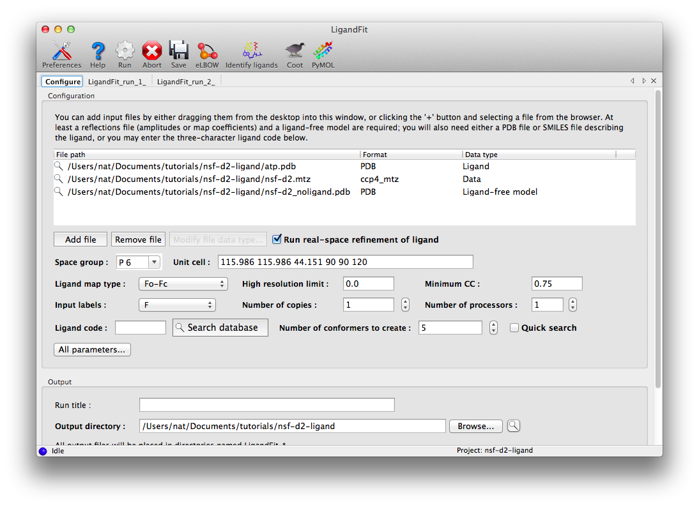
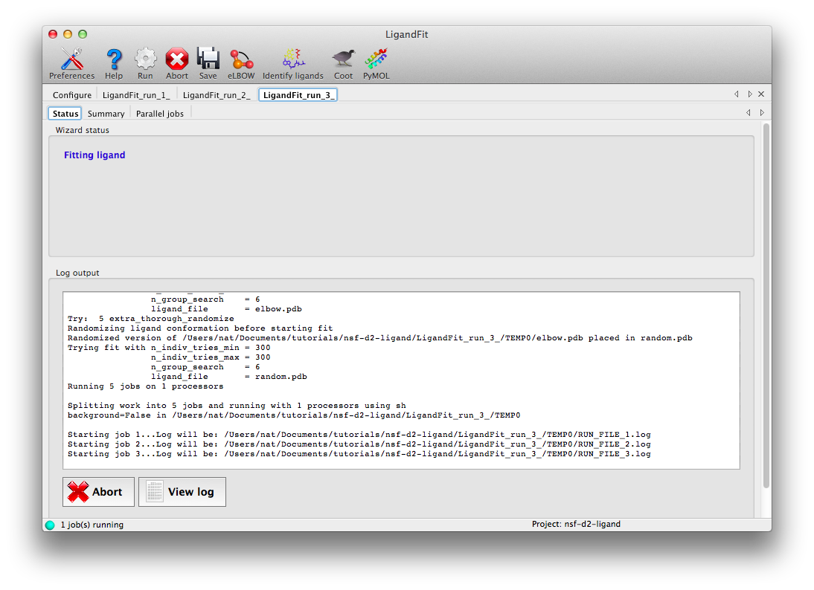
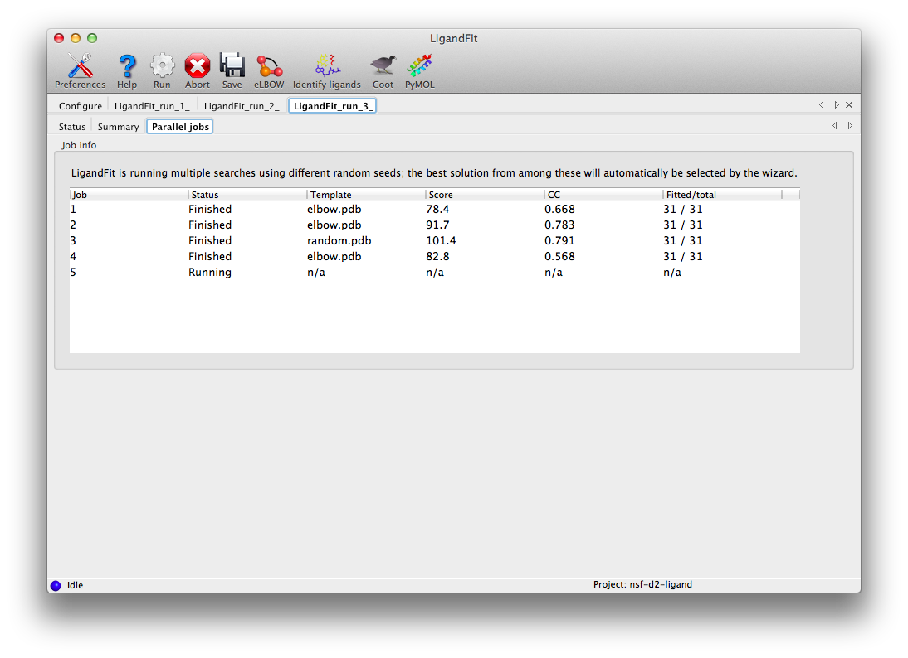
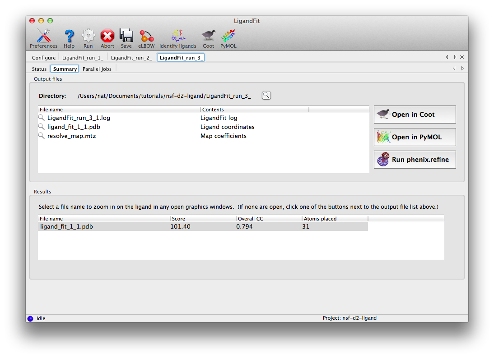
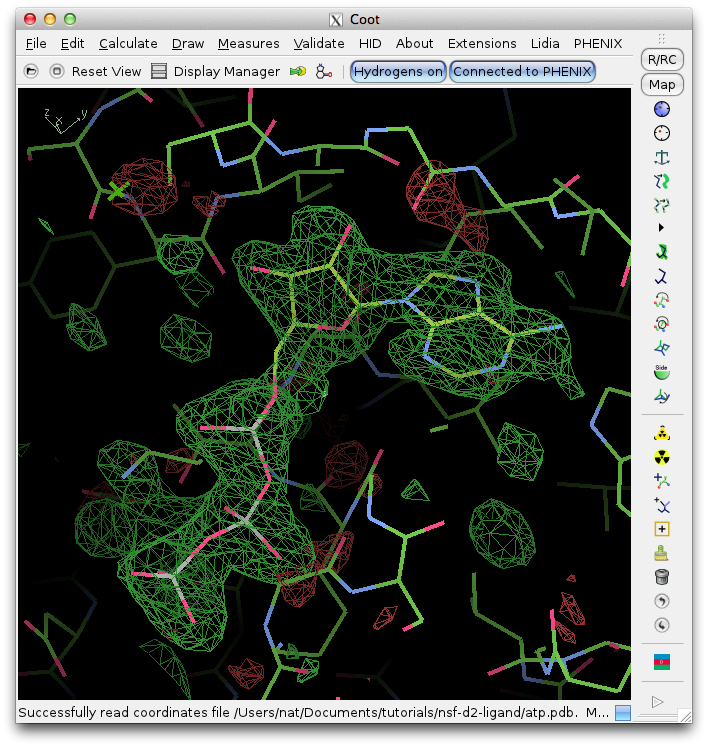

This tutorial describes how to use the LigandFit wizard to automatically place an ATP molecule in a difference map. An older tutorial covering use of LigandFit on the command line is still available.
The dataset for this tutorial is "N-ethylmaleimide sensitive factor + ATP", which can be automatically created as a project in the Phenix GUI. Three files are included: a ligand-free model, experimental data (MTZ file), and the ligand itself. Once you have created the project, open the LigandFit GUI under the "Ligands" category. The files can be added to the input list by dragging them from the desktop, or by clicking the "Add file" button and selecting them from the browser window.

The space group and unit cell will be automatically loaded from the data file, and suitable column labels added to the "Input labels" menu. In this case, we only have amplitudes available, so these will be used as input, and LigandFit will calculate an Fo-Fc map using model phases. However, in many cases you will obtain optimal results by using an mFo-DFc map such as those output by phenix.refine or phenix.maps.
For this example, the rest of the parameters can be left on default settings; consult the full documentation for explanation of what these mean. The only exception is "Number of processors"; if you have multiple processor cores available, you can set this higher. Note that since the ligand structure has already been characterized in the PDB, we could simply enter the three-letter residue name ("ATP") under "Ligand code", instead of supplying the ATP as a PDB file. However, this will increase the runtime, since eLBOW will be run to generate coordinates.
Click "Run" on the toolbar ot launch LigandFit. A new tab will appear showing the log output:

LigandFit will start several child processes to sample a wide variety of ligand conformations. The "Parallel jobs" tab will show the output of the individual runs as they progress; the best result will be selected for real-space refinement and be copied to the main output directory.

At the end of the run, the summary tab will list the essential output files and the statistics for the final result, and active the buttons to launch other programs.

Clicking "Open in Coot" will start Coot and load the difference map, starting model, and ligand structure. Click on the result in the summary tab to zoom in on the ligand in Coot. Further refinement is essential, but we can see that the fit is already very good. (The excess difference density near the phosphate atoms belongs to an unmodeled magnesium ion and coordinating waters.)
